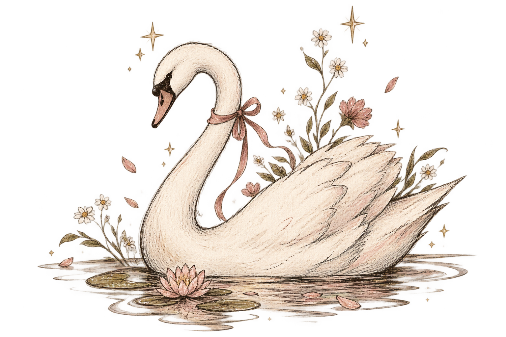
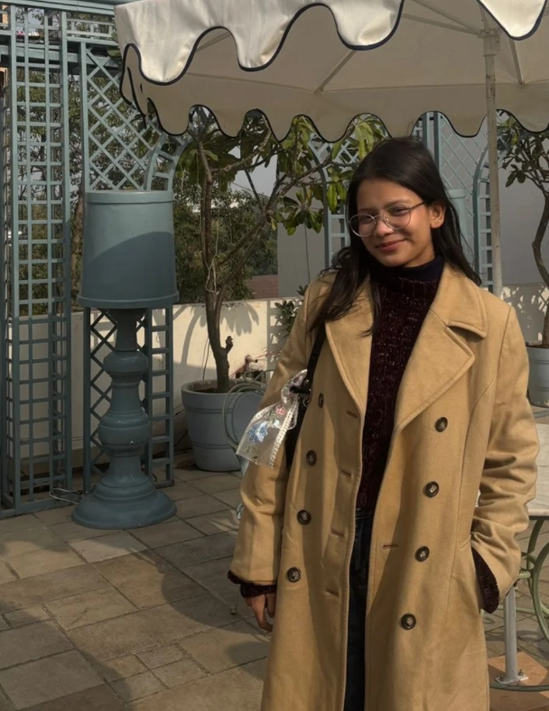

01
POETRY
WRITER · POET · STORYTELLER
Come in.
I've left the
lights on.
A little corner for books, poems, unfinished thoughts, and everything in between.
EXPLORE MY WORK

laiba ♡
01 — THE BEGINNING
There are things I don't know
how to say out loud.
So I write them down.
02 — THE BOOK
Grief in
a Glass Jar
I finally opened it again.
 MY FIRST BOOK · 2026
MY FIRST BOOK · 2026
I wrote this book, and then I spent a year avoiding it.
Not because I hated it. Maybe because I knew exactly how much of me was inside it.
There are pieces of my pain in these pages. Thoughts I never knew what to do with. Memories I couldn't forget. Things I could write down much more easily than I could ever say out loud.
For a long time, I kept the book closed.
Publishing it feels different. It feels like putting everything I've been carrying somewhere it can finally stay.
And now, finally, I could walk into my twenties empty-handed.
READ THE BOOK →03 — WRITING
Things I've written.
04 — JOURNAL
Behind the
words.
the things I don't
always talk about. ♡
⌕
01
15.02.26
I wrote a book
read this one →
✿
02
I wrote a book
and then hid it.
A little story about avoiding the book that knew too much about me.
21.02.26
The strange feeling of
keep reading →
03
The strange feeling of
becoming an author.
Somewhere between writing the last page and seeing your name on a cover.
02.03.26
What happens after
open this page →
What happens after
you finally let go.
On publishing something that once felt too personal to share.
05 — ABOUT
Hi,
I'm Laiba.
still figuring it out ♡
I've always been a little too interested in the things people leave unsaid.
The tiny details. The feelings that arrive before we have words for them. The stories we carry around without realizing we're carrying them.
I'm a writer, a reader, a psychology student, and someone who keeps finding new things she wants to make.
Some days that's a poem. Some days it's a painting, a page of a book, or an idea I absolutely do not have time for but will probably pursue anyway.
This little corner of the internet is where I keep some of those things.
I'm glad you found your way here.